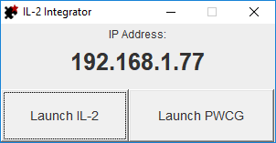

The IL-2 Integrator is an integration tool for the game series IL-2 Great Battles that allows third party tools to include features that aim to improve the game experience.
Currently the following features are available:
To install the IL-2 Integrator, simply download the latest release and extract it to the game's root folder. The root folder could be one of the following:
To use the IL-2 Integrator, simply launch the application. The following window will appear. The displayed IP address is the one that you can use when requested by third party tools. If the "Launch IL-2" button is disabled, this means that the integrator was extracted into the wrong directory.
After that, leave the application running in the background and play the game. It is not necessary to launch the game through the provided button.
You can download the latest release on GitHub.
The full source code is available on GitHub. Feel free the explore, modify and use it. Contributions are welcome with improvements or new features.